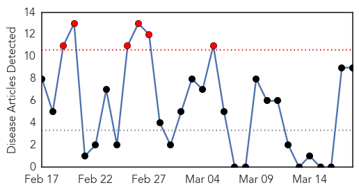

30 Day Trends
Web: 6 alerts, 0 warnings
Twitter: 8 alerts, 0 warnings
Top Articles:
- 0.996
- Another cholera outbreak looms
- 0.957
- Mozambique: A few drops of understanding to improve water supply
- 0.922
- 'Basically, they just fell out of the sky': 2,000 snow geese found dead in Idaho
- 0.851
- Scientists Concerned After 2,000 Wild Geese Were Found Dead in Idaho
- 0.818
- Over 2,000 geese die of avian cholera in Idaho
- 0.782
- Two thousand snow geese mysteriously fall dead from Idaho sky
- 0.735
- Rivers facing political epidemic, says Commissioner
- 0.638
- NGO, Assembly to strengthen Cholera prevention
- 0.544
- 2000 Migratory Snow Geese Fall From the Sky
Top Tweets:
-
No tweets found for Mar 18, 2015
Web/News Articles
Tweets

Article Locations

Article Confidences